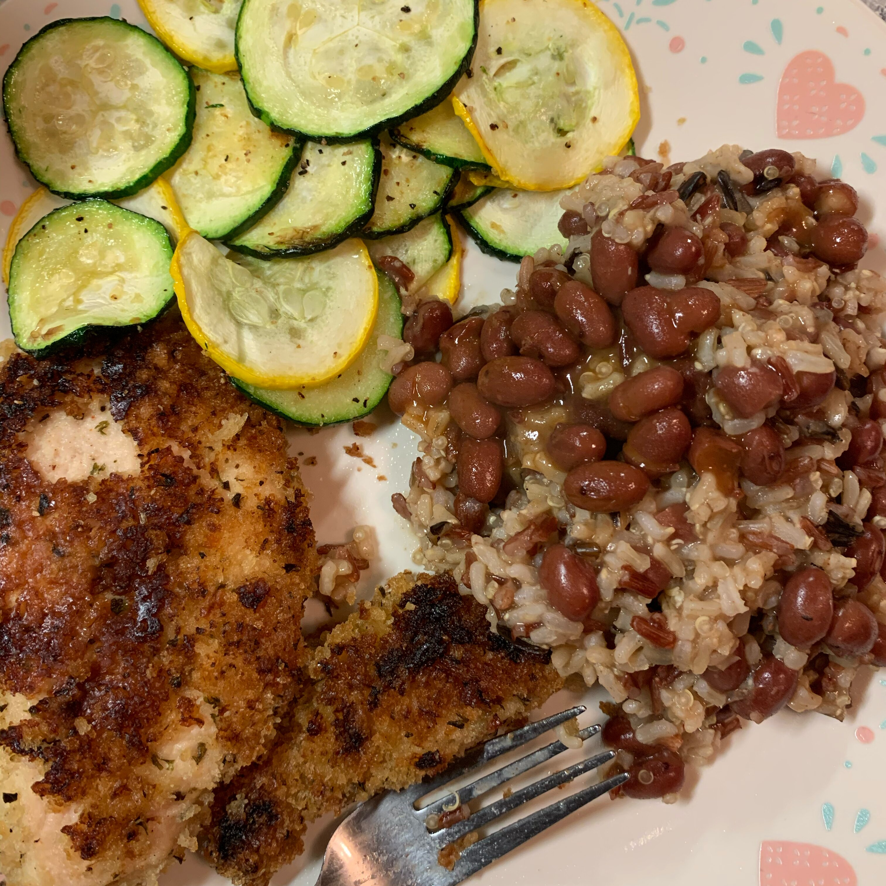

Sheet Pan Parmesan Chicken and Veggies

Description
This easy sheet-pan dinner features herb-roasted vegetables and boneless, skinless chicken breasts. "Baked EXTRA CRISPY Parmesan chicken and veggies — dinner made on one pan and packed with flavor!" says chpmnk42.
Ingredients
- 1 tablespoon dried parsley
- 1 tablespoon dried oregano
- 1 teaspoon paprika
- ½ teaspoon garlic powder
- ¼ teaspoon seasoned salt, or to taste
- ¼ teaspoon ground black pepper, or to taste
- ½ pound fresh green beans, trimmed
- 1 small red potato, diced
- 1 sweet bell pepper, chopped
- 1 cup broccoli florets, chopped
- 1 tablespoon minced garlic
- 3 tablespoons olive oil
- ⅓ cup all-purpose flour
- 4 tablespoons butter, melted
- 1 cup panko bread crumbs
- 1 cup freshly grated Parmesan cheese, divided
- 1 ½ pounds skinless, boneless chicken breasts, pounded flat
Steps
- Preheat the oven to 400 degrees F (200 degrees C). Line a sheet pan with parchment paper.
- Combine oregano, parsley, paprika, garlic powder, seasoned salt, and pepper in a small bowl.
- Place green beans, potato, bell pepper, broccoli, and garlic on the prepared sheet pan. Drizzle olive oil on top and sprinkle with 1/2 of the seasoning mix; toss to coat. Spread vegetables on one side of the pan.
- Place flour in a bowl. Place melted butter in a second bowl. Combine panko, 2/3 cup Parmesan cheese, and the remaining 1/2 of the seasoning mix in a third bowl.
- Remove any excess fat from chicken breasts and slice into 1 1/4 inch strips. Coat chicken strips in flour, then dredge in melted butter, and then dip in the Parmesan-panko mixture until heavily coated. Place on the
empty half of the sheet pan
and sprinkle with any remaining Parmesan-panko mixture, pressing onto the chicken.
- Bake in the preheated oven for 10 minutes. Remove from the oven, flip chicken strips, stir the veggies, and return to the oven. Bake until chicken juices run clear and veggies are crisp-tender, 10 to 15 minutes. An
instant-read thermometer
inserted into the center of the chicken should read at least 165 degrees F (74 degrees C).
- While the chicken is baking, whisk together mayonnaise, ketchup, garlic powder, and Worcestershire sauce.
- Remove chicken and veggies from the oven. Toss veggies with remaining Parmesan cheese. Serve with dipping sauce.